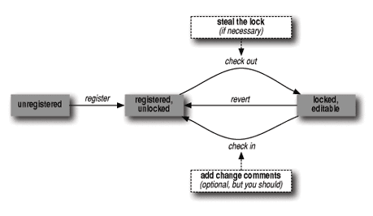
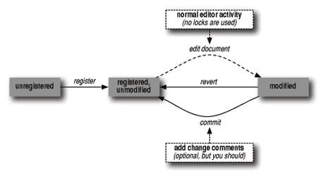

{% include JB/setup %}
{% raw %}
<div>
<div class="book" xml:lang="en"><div class="book"><div class="book"><div class="book"><h1 class="title"><a id="gnu3-CHP-12-SECT-3" class="calibre1"></a>How VC Helps with Basic Operations</h1></div></div></div><p class="copyright">Historically, you had to know three or four different shell commands
to do the basic operations of version control (registration, check
in, check out, and revert), and you had to do each one outside your
editor (or in an editor subshell). This procedure was complicated and
annoying, or at best a distraction from the flow of working on your
code and changes.</p><p class="copyright">VC's interface is much simpler. The simplicity comes
from noticing that whatever state your version-controlled file is in,
there is normally just one logical thing to do next. Here are the
rules:</p><div class="book"><ul class="itemizedlist"><li class="listitem"><p class="copyright">If your file isn't under version control, the next
logical thing to do is register it and (where relevant) check out a
modifiable copy for you.</p></li><li class="listitem"><p class="copyright">If it's registered, but not checked out by anyone,
the next thing you generally want to do is check it out so you can
edit it (again, where relevant, such as if you're
using CVS in a "keep files read-only unless I say I
want to edit them" mode).</p></li><li class="listitem"><p class="copyright">If you have made changes to the file, the next logical thing is to
check it back in, which may involve reconciling your changes with
those made by someone else.</p></li><li class="listitem"><p class="copyright">Much more rarely, if you're using one of the pre-CVS
systems, if someone else has a file checked out, you may want to
steal the lock (notifying the lock owner that you've
done so).</p></li></ul></div><p class="copyright">Indeed, VC mode has just <a id="gnu3-CHP-12-ITERM-2871" class="calibre2"></a>
            <a id="gnu3-CHP-12-ITERM-2872" class="calibre2"></a>one basic command: <span><strong class="calibre5">C-x v v</strong></span> (for <span><strong class="calibre5">vc-next-action</strong></span>), which you can think of as
"do the next logical thing to this
file" or, more precisely: "take the
currently visited file to the next normal version control
state." It follows the arrows in <a class="calibre2" href="ch12s03.html#gnu3-CHP-12-FIG-1" title="Figure 12-1. The traditional version control cycle">Figure 12-1</a>, which describes the traditional version
control cycle.<sup class="calibre6">[<a id="gnu3-CHP-12-FNOTE-2" href="#ftn.gnu3-CHP-12-FNOTE-2" class="calibre2">2</a>]</sup> This command is available
in every Emacs since 19; when you invoke it, it automatically fetches
the rest of VC and does its job.</p><div class="figure"><a id="gnu3-CHP-12-FIG-1" class="calibre2"></a><div class="figure-contents"><div class="mediaobject"><a id="I_12_tt656" class="calibre2"></a></div></div><p class="title3"><b class="calibre25">Figure 12-1. The traditional version control cycle</b></p></div><br class="book"/><p class="copyright">There's a little more to it than that, of course.
For one thing, when you check in a set of changes to a file, VC pops
up a buffer for you to enter a change comment. Similarly, if
you're in an older version control environment, when
you steal a lock, VC pops up a buffer requesting an explanation. This
explanation is mailed to the lock owner.</p><p class="copyright">VC gives you a revert operation as well: <span><strong class="calibre5">C-x v
u</strong></span> (for <span><strong class="calibre5">vc-revert-buffer</strong></span>).
Actually, the function that implements <span><strong class="calibre5">vc-next-action</strong></span> checks to see if the buffer is
unmodified since check-out time; if so, it offers to revert the
buffer and unlocks the work file rather than checking in an empty
change.</p><p class="copyright">Although it's worth understanding this traditional
flow because it's how VC is designed, working with
today's concurrent version control systems is
slightly different. Luckily, it's even a little
simpler. Because there is no need to obtain a lock in order to edit a
document, one of the VC steps is missing (or, if you prefer, you can
think of it as implicit). This is illustrated in <a class="calibre2" href="ch12s03.html#gnu3-CHP-12-FIG-2" title="Figure 12-2. The concurrent version control cycle">Figure 12-2</a>.</p><div class="figure"><a id="gnu3-CHP-12-FIG-2" class="calibre2"></a><div class="figure-contents"><div class="mediaobject"><a id="I_12_tt657" class="calibre2"></a></div></div><p class="title3"><b class="calibre25">Figure 12-2. The concurrent version control cycle</b></p></div><br class="book"/><p class="copyright">The transition from the unmodified state to the modified state (with
respect to the version in the repository) is shown as a dotted line,
because you no longer perform a VC operation here. You just start
editing the file you want to work with. Whenever you tell VC you want
the "next action"
it's able to tell whether the document is modified
or not. If it is, the current version is committed
("checked in," if you will) and
you're prompted for the change comments. If the file
is registered but unmodified, VC simply displays a message in the
minibuffer telling you that the buffer is up to date.</p><p class="copyright">If you prefer to configure CVS to give you read-only versions of
files until you explicitly choose to edit them, your workflow will
remain that of <a class="calibre2" href="ch12s03.html#gnu3-CHP-12-FIG-1" title="Figure 12-1. The traditional version control cycle">Figure 12-1</a>.</p><div class="book"><br class="book"/><hr class="calibre4"/><div class="book"><p class="copyright"><sup class="calibre6">[<a id="ftn.gnu3-CHP-12-FNOTE-2" href="#gnu3-CHP-12-FNOTE-2" class="calibre2">2</a>] </sup>Minor tricky detail: your very first
<span><strong class="calibre5">vc-next-action</strong></span> on a new work file
normally takes you from
"unregistered" through
"registered, unlocked," and then to
"locked, editable." Why make you do
two commands for those two steps when one will cover the typical
case? If you want to register a file but not check it out, use
<span><strong class="calibre5">C-x v i</strong></span> (for <span><strong class="calibre5">vc-register</strong></span>). With the advent of CVS, this
point becomes largely moot as you'll see in <a class="calibre2" href="ch12s03.html#gnu3-CHP-12-FIG-2" title="Figure 12-2. The concurrent version control cycle">Figure 12-2</a>.</p></div></div></div></div>

{% endraw %}

